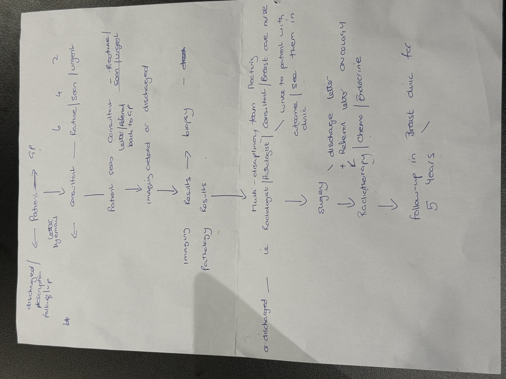
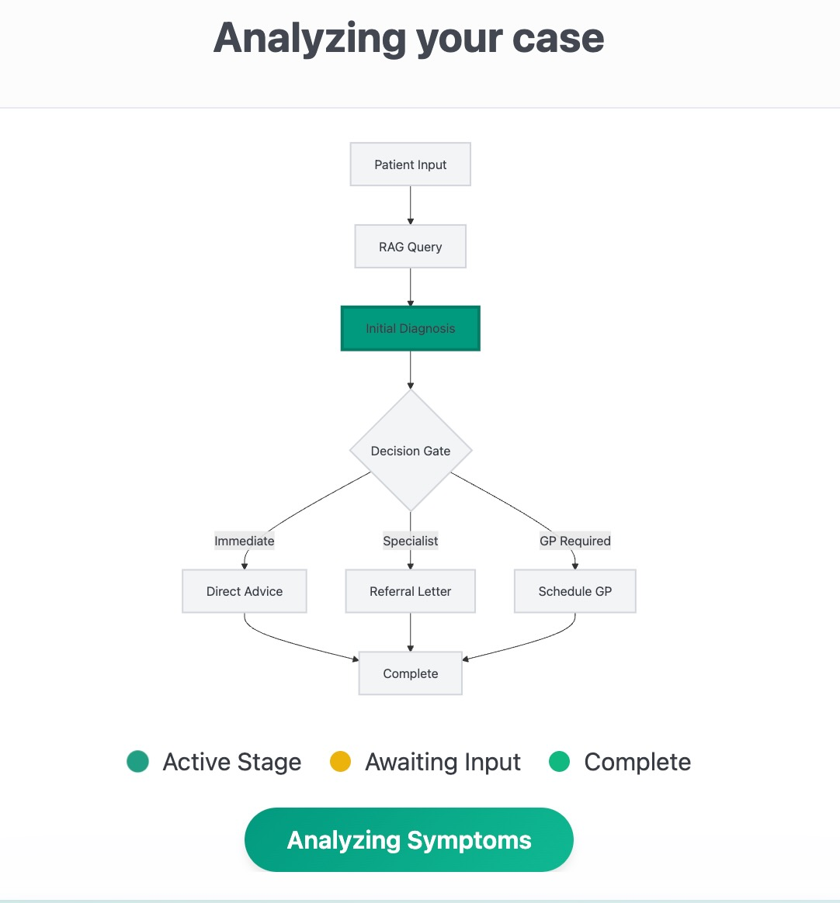

Islanders are still experiencing the impact of increased living costs and, although GP fees are subsidised by the Government, patient charges are creating a real barrier to some Islanders accessing health services.
We have already reduced GP fees for people on the Health Access Scheme, and are planning to increase the subsidy for GP visits.
Delivering this priority will ease financial pressures on households and support Islanders to access GP care early, without fear of high costs. It will also help improve the overall wellbeing of Islanders, supporting them to lead longer, healthier lives.

